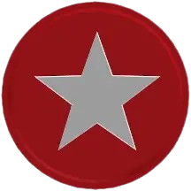

1. Los comienzos: Player Points
Cuando Roblox comenzó, todavía no existía la economía que conocemos actualmente. Originalmente había un sistema de Roblox Points, que se obtenían principalmente mediante la actividad dentro de la plataforma. Los PLAYER Points, normalmente abreviados como PP, fueron el primer sistema de moneda/puntos de Roblox. Existían incluso antes del lanzamiento oficial de Roblox. Durante los primeros años de desarrollo de la plataforma, los jugadores podían acumular estos puntos como una forma de demostrar su actividad y sus logros dentro de Roblox. Roblox todavía era muy diferente a lo que conocemos actualmente. La plataforma estaba mucho más enfocada en jugar, crear y experimentar que en tener una economía virtual. Por eso, los PLAYER Points funcionaban más como un sistema de reconocimiento que como una moneda comercial moderna. Esto muestra que los primeros puntos estaban muy relacionados con la actividad y el reconocimiento del jugador, y no tanto con gastar dinero. Su principal finalidad era mostrar que un jugador había conseguido determinados logros o tenía una importante participación dentro de la plataforma.